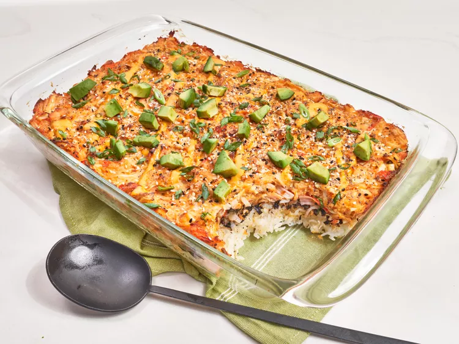

Salmon Sushi Bake
Home

Description
This salmon sushi bake is a layered casserole with a sushi rice base topped with a creamy salmon and surimi spread, then sprinkled with everything seasoning, avocado, and green onion.
Ingredients
- 1 1/2 pounds salmon filet
- 1 1/2 teaspoons kosher salt, divided
- 1/4 teaspoon freshly ground black pepper
- 1/2 teaspoon lemon pepper
- 1/4 teaspoon garlic powder
Steps
- Preheat the oven to 450 degrees F (230 degrees C). Line a baking sheet with parchment or foil.
- Place salmon on the baking sheet; sprinkle with 1/2 teaspoon salt, pepper, lemon pepper, garlic powder, and paprika. Drizzle oil over salmon.
- Bake in the preheated oven until salmon just starts to flake easily with a fork, 10 to 12 minutes. Let cool slightly before breaking up into small pieces. Reduce oven temperature to 400 degrees F (200 degrees C).
- Meanwhile, combine rice, water, and remaining salt in a sauce pan. Bring to a boil, stir once, reduce heat to low, and cover. Cook until liquid is absorbed and rice is tender, 12 to 14 minutes. Transfer to a large bowl and fluff with a fork. Stir in rice vinegar and let cool.
- When salmon is cooled, add it to a bowl with crab, cream cheese, 1/2 cup mayonnaise, 1 1/2 tablespoons Sriracha, and soy sauce, and stir to combine.
- Lightly grease a 9x13-inch baking dish; add rice and press into an even layer. Crush nori sheets over rice and sprinkle with furikake. Spread salmon mixture over seaweed; sprinkle evenly with everything seasoning.
- Bake at 400 degrees F (200 degrees C) until browned around the edges, about 25 minutes.
- Stir remaining 1/2 cup mayonnaise, remaining 1 1/2 tablespoons Sriracha, and lime juice together. Drizzle over casserole before serving; top with green onions and avocado.